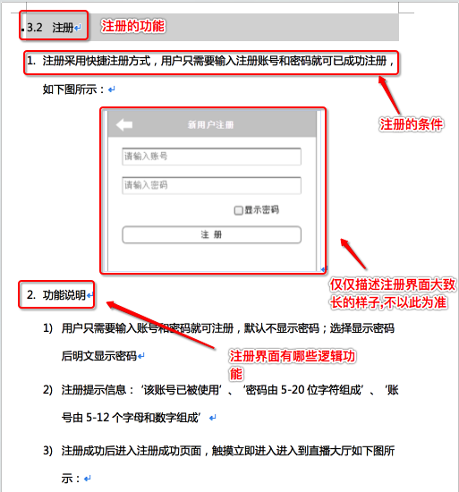
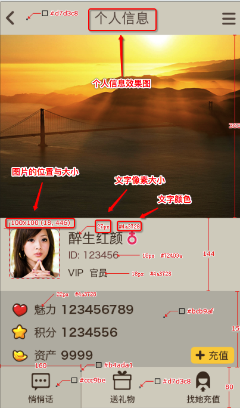
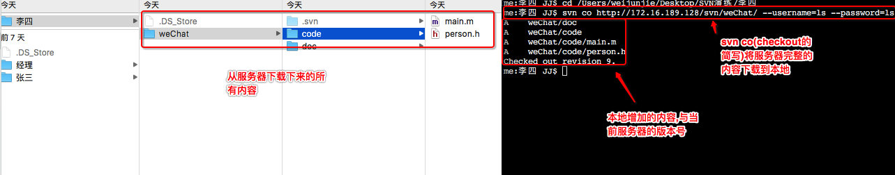
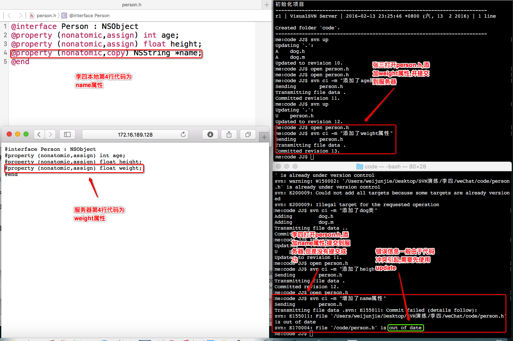

- 一.前提
1.一般真实开发,项目经理初始化完项目就不参与开发了
2.SVN演练下,增加李四文件夹
3.这时候李四加入公司,与张三进行多人开发
4.新人到公司后,需要做一些操作
- 二.新人到公司后需要做的操作
1.向项目经理要服务器地址以及svn帐号和密码,之后就能够查看公司的源代码都做了哪些业务,之后项目经理会给新人创建帐号,并设置新人的访问权限
2.新人了解源代码1到2周的时间开始进行开发,需要向项目经理要其他东西
1.需求文档:一般情况下就是一个word文档,这个文档中会详细的记录着这个版本需要做哪些需求
 2.接口文档:详细的记录服务器最某个功能的详细的接口

3.效果图:某个界面的最终的样子

- 三.新人(李四)开始进行开发(项目经理退出开发)
1.项目经理的终端作为李四的终端,来到李四的文件夹下
2.将服务器完整的代码下载到本地
svn checkout(co) 服务器地址 --username=ls --password=ls
3.李四需要dog类,先进入到code目录下,再创建dog类
touch dog.h dog.m

4.将dog添加到svn的管理之下(*为通配符)
svn add *:将svn下没有被svn管理的所有文件统统加入svn的管理之下

5.将本地的修改提交的服务器
svn commit -m "添加了dog类"

- 四.张三开发
将服务器最新的代码更新到本地
svn update

- 五.演示多人开发可能会引起的问题
1.张三打开person.h并且添加age属性
open person.h
2.将本地修改的内容提交到服务器
svn commit -m "添加了age属性"
3.李四想要服务器最新的代码直接进行更新
svn update
4.李四打开person.h并且添加height属性
open person.h
5.将本地修改的内容提交到服务器
svn commit -m "添加了height属性"
6.张三想要服务器最新的代码直接进行更新
svn update

7.上述都是多人开发的理想过程,这个时候张三打开person.h,并且添加weight属性
open person.h
8.将本地修改的内容提交到服务器
svn commit -m "添加了weight属性"
9.这时候李四可能不知道张三提交了代码,而是打开person.h,添加了name属性
open person.h
10.这个时候如果李四进行提交的时候没有提交成功,错误信息为out of date :表示过期,一般出现这个错误信息,基本上是由于冲突引起的

- 六.总结
1.新人加入公司,项目经理在服务器配置新人帐号,并且设置新人访问权限
2.新人加入公司要做的事情
向项目经理索要svn服务器服务器地址以及svn的帐号和密码,需求文档,接口文档和效果图
3.新增命令行svn add * :将svn目录下面所有没有被添加到svn管理之下的文件统一添加进去,如果已经在svn管理之下则会有警告,警告可以忽略
4.新人加入开发下载所有代码到本地,修改代码提交到服务器
5.多人开发: 一方修改代码提交到服务器,另一方更新代码到本地,以此类推
6.当一方修改了代码,之后提交到服务器,另一方没有更新,而是同样修改了这个文件的同行代码,这个时候提交操作会出现错误信息out of date:过期,一般是由于冲突引起的
7.出现out of date,首先要更新服务器最新代码到本地,但是更新的时候是否会产生其他问题,下节课继续演示!
- 七.新人报道说明
1.入职之后，会有相关负责任为你分配办公桌位，公司邮箱帐号，电脑以及开机用户名密码，SVN帐号和密码，项目组等
2.iOS项目开发可能涉及到的工作人员
1）产品经理：负责产品整体规划，提供app需求文档，和工作计划
2）iOS开发组
负责人：分配具体的任务模块，SVN等仓库配置、框架搭建、核心模块
成员：完成部分功能模块的开发
3）UI设计师：根据产品经理给定的需求文档提供高保真效果图（UI设计、切图等等）
4）后台接口人员：产品开发前期介入，编写app需要的必要接口，提供记载了所有网络请求数据交换相关的接口文档
5）测试人员：中后期介入，对应用进行全方位的测试（向开发人员反馈发现的bug）